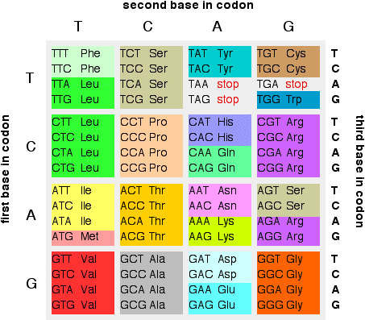

|
THE GENETIC CODE This page looks at how the base sequences in DNA and RNA are used to code for particular amino acids when it comes to building protein chains. It is designed for 16 - 18 year old chemistry students. | ||
|
Note: If you have come straight to this page from a search engine, you should be aware that this is the fourth page in a sequence of pages about DNA and RNA. Unless you just want a quick reference to get the coding for a particular amino acid, it would pay you to start from the beginning with the structure of DNA. | ||
|
Introduction You can think of the sequences of bases in the coding strand of DNA or in messenger RNA as coded instructions for building protein chains out of amino acids. There are 20 amino acids used in making proteins, but only four different bases to be used to code for them. Obviously one base can't code for one amino acid. That would leave 16 amino acids with no codes. If you took two bases to code for each amino acid, that would still only give you 16 possible codes (TT, TC, TA, TG, CT, CC, CA and so on) - still not enough. However, if you took three bases per amino acid, that gives you 64 codes (TTT, TTC, TTA, TTG, TCT, TCC and so on). That's enough to code for everything with lots to spare. You will find a full table of these below. A three base sequence in DNA or RNA is known as a codon. The code in DNA The codes in the coding strand of DNA and in messenger RNA aren't, of course, identical, because in RNA the base uracil (U) is used instead of thymine (T). The table shows how the various combinations of three bases in the coding strand of DNA are used to code for individual amino acids - shown by their three letter abbreviation.  The table is arranged in such a way that it is easy to find any particular combination you want. It is fairly obvious how it works and, in any case, it doesn't take very long just to scan through the table to find what you want. The colours are to stress the fact that most of the amino acids have more than one code. Look, for example, at leucine in the first column. There are six different codons all of which will eventually produce a leucine (Leu) in the protein chain. There are also six for serine (Ser). In fact there are only two amino acids which have only one sequence of bases to code for them - methionine (Met) and tryptophan (Trp). You have probably noticed that three codons don't have an amino acid written beside them, but say "stop" instead. For obvious reasons these are known as stop codons. We'll leave talking about those until we have looked at the way the code works in messenger RNA. The code in messenger RNA You will remember that when DNA is transcribed into messenger RNA, the sequence of bases remains exactly the same, except that each thymine (T) is replaced by uracil (U). That gives you the table:
In many ways, this is the more useful table. Messenger RNA is directly involved in the production of the protein chains (see the next page in this sequence). The DNA coding chain is one stage removed from this because it must first be transcribed into a messenger RNA chain. Start and stop codons The stop codons in the RNA table (UAA, UAG and UGA) serve as a signal that the end of the chain has been reached during protein synthesis - and we will come back to that on the next page. There is also a start codon - but you won't find it called that in the table! The codon that marks the start of a protein chain is AUG. If you check the table, that's the amino acid, methionine (Met). That ought to mean that every protein chain must start with methionine. That's not quite true because in some cases the methionine can get chopped off the chain after synthesis is complete.
© Jim Clark 2007 (last modified May 2016) |
||